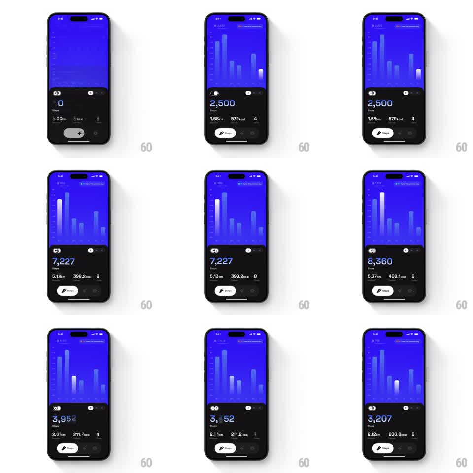

Media
Frame-by-frame

Rebuild this animation 1:1: GO Club's stats dashboard - tapping a bar in the steps bar chart highlights it and rolls the stats below (steps, distance, kcal, streak) to the day's values with a motion-blurred vertical odometer transition.

Rebuild this animation 1:1: GO Club's stats dashboard - tapping a bar in the steps bar chart highlights it and rolls the stats below (steps, distance, kcal, streak) to the day's values with a motion-blurred vertical odometer transition.
## Integration
Integration: stack-agnostic spec - springs given as stiffness/damping, timed motions as duration + curve; map every value to your framework and animation library of choice.
## Scene
Dark fitness dashboard: top half is a vivid blue bar chart (a week+ of step bars on a gradient panel); bottom half is the stats block - two toggle icons, a huge step count ("2,500 Steps"), a row ("1.68km", "579kcal", "4" with icons), and a Steps pill button.
## Motion spec
Pattern: odometer stat swap on selection, ~500ms.
- Bar tap: the tapped bar brightens to near-white and lifts slightly (scale 1 -> 1.05 on Y, 150ms); the previously selected bar returns to default.
- The step count rolls: digits travel vertically like an odometer with a heavy motion blur during travel (translateY + blur, 350ms, ease-out), landing sharp on the new value.
- Distance, kcal, and streak values roll the same way, staggered 40ms after the main count.
- The chart's other bars and all chrome stay static.
## Calibration
- Blur lives only during digit travel; text must be crisp at rest in both states.
- Rolling direction reflects value change (up for increase, down for decrease) when possible - a wrong-direction roll feels arbitrary.
## Reduced motion
Values crossfade (200ms); bar highlight unchanged.
## Don't miss
- The highlight and the roll are simultaneous - highlighting first and rolling later reads as two separate responses.
- All four stats roll together; a lone count updating while the rest jump-cut breaks the instrument feel.